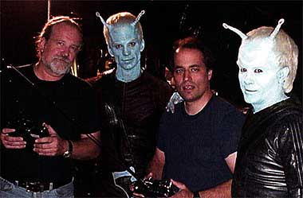
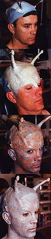
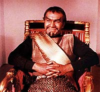
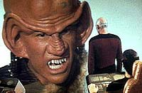
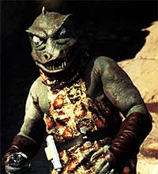
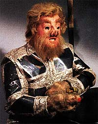
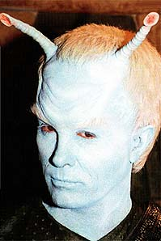

|

Clique aqui
para visitar o
Acervo de colunas


|
Aliengenas aos trancos e barrancos
  A nova maquiagem Andoriana deve ser recebida como a mais bem-sucedida tentativa em 35 anos de recriar o aspecto original desses aliengenas, mantendo a premissa clssica, mas ainda assim usando de toda a tecnologia moderna para tornar esses ETs mais interessantes do que nunca. Embora outras tentativas de recriar os Andorianos tenham sido feitas em "Jornada nas Estrelas - O Filme", "Jornada nas Estrelas IV - A Volta Para Casa" e na srie A Nova Gerao, nenhuma delas conseguiu ser to fiel ao original quanto Enterprise. E nenhuma ousou criar um visual to complexo para reproduzir a simplicidade clssica.O fato que funcionou. As mltiplas camadas de pintura, borracha e maquinrio colocado sobre os atores deu aos Andorianos uma vida que jamais poderia ter sido imaginada antes. Os fs agradecem de corao. J a introduo dos Klingons foi uma opo mais polmica, mas ainda assim respaldada razoavelmente pelo que se conhece. Historicamente sua apario compatvel --a nica restrio se faz pela proximidade de seu sistema natal com a Terra. Em termos visuais, a dificuldade impossvel de driblar. Que visual escolher, o "cabea-de-tartaruga", popularizado de "Jornada nas Estrelas - O Filme" em diante, ou o "Gngis Khan de baixo oramento" da Srie Clssica?  A opo dos produtores foi a nica possvel, tendo em vista a maior popularidade do visual moderno dos Klingons e o maior apuro tcnico. O que no quer dizer que a deciso no tenha sido polmica. Apenas significa que era justificvel.Infelizmente nem tudo at agora justificvel. A informao de que "Acquisition", um dos episdios do final da primeira temporada, ter uma apario dos Ferengis destri tudo que foi visto antes em Jornada nas Estrelas. No em termos de cronologia, uma vez que Archer e cia. jamais sabero que foram abordados por Ferengis, deixando para Picard e cia. fazerem o "primeiro contato oficial" em "The Last Outpost", mas em termos de bom senso. muito difcil acreditar que os Ferengis --maiores defensores do comrcio galctico e, por definio, altamente sociveis-- tenham permanecido nas redondezas por dois sculos inteiros sem serem contatados.  A impresso que A Nova Gerao passava dos Ferengis que eles vinham de um sistema distante da Terra que s agora, com o avano da explorao humana, estava acessvel aos cidados da Federao. Enterprise contradiz essa noo, mostrando que eles esto logo ali na esquina. Isso decepcionante, no s do ponto de vista de imploso da coerncia interna do universo de Jornada nas Estrelas, mas principalmente na demonstrao de que os produtores parecem no conseguir se desvencilhar de suas razes no sculo 24.Algum poderia defender os produtores, dizendo que, se por um lado h alguns problemas de coerncia na insero de aliengenas tpicos de outras eras, como os j vistos Nausicaans e os em vias de chegar Ferengis, por outro seria muito mais estranho se a Enterprise (NX-01) encontrasse 170 novas espcies das quais jamais ouviramos falar no futuro. E, como eles tm no minimo 182 episdios para produzir (o equivalente a sete temporadas), de se supor que eles faam uso extenso do que j foi visto antes. Parece at razovel, mas importante notar que esse raciocnio parte de uma premissa falsa: de que so precisos centenas de aliengenas, conhecidos ou no, para completar a srie. Essa noo, muito embutida nos produtores em razo da experincia com Voyager, cujo conceito implicava essa idia de "aliengena da semana" (a nave nunca parava na mesma regio do espao), poderia e deveria ter sido abandonada na transio para o sculo 22. "Babylon 5" se fez uma excelente srie e criou um magnfico universo fictcio usando apenas um punhado de raas. E essa seria a abordagem que eu esperaria de Enterprise. No preciso ter "aliengenas da semana" aos montes para fazer uma boa srie de fico cientfica. Muito mais importante a consistncia e a profundidade com que esses aliengenas so mostrados. No falta boa vontade aos produtores de se manterem fiis ao que Jornada mostrou. Falta apenas a estratgia correta. Comentrios como os do roteirista Michael Sussman, por exemplo, do amostras do que deve ser feito. Ele contou recentemente "Star Trek: The Magazine" algumas das coisas que eles pensaram sobre trazer aliengenas da Srie Clssica para Enterprise.  "Antes de decidirmos usar os Andorianos, todos ns falamos sobre fazer os Gorns da Srie Clssica. Mas quando vimos o episdio, foi decidido por Rick Berman e Brannon Braga que estava muito claro de que a passagem do capito Kirk foi a primeira vez que algum tinha visto um Gorn. Ento, por mais que quisssemos v-los, no se encaixa no que foi estabelecido, eles ficaram meio que fora de cogitao." Se de um lado ele apresenta um problema, por outro, d a soluo. "Mas h muitos outros! Deixamos uma referncia aos Telaritas em 'Civilization'. Adoraramos ver os Telaritas."A pergunta que fica : qual a diferena entre o primeiro contato de Kirk com os Gorns e o primeiro contato de Picard com os Ferengis? S Berman e Braga sabem... O fato que seria muito mais saudvel a Jornada nas Estrelas se Enterprise fornecer um insight profundo sobre as raas dos tempos da formao da Federao --temos Betazides (eles so chatos, eu sei, mas pelo menos esto l), Andorianos, Telaritas, Tholianos, Klingons, Vulcanos, Romulanos, Denobulanos, Axanar, Nausicaans, rions e muitos outros-- do que trazer Ferengis, Fundadores, Borgs, Jem'Hadars. Eles so todos timos, mas no pertencem a esta srie!  "Acquisition" pode se provar aidna um belo contorno cronologia oficial, com argumentos convincentes para a apario Ferengi, mas provavelmente um passo na direo errada. "The Andorian Incident" e "Shadows of P'Jem", passos acertadssimos. Por enquanto, entre mortos e feridos, Jornada sobrevive. Veremos at quando.Salvador
Nogueira, jornalista, escreve regularmente
sobre |
 Escrever uma pr-sequncia no
um desafio simples. Se for de algo monumental, como Jornada
nas Estrelas, com mais de 600 episdios produzidos, fica mais
complicado ainda. Porque no depende apenas de se manter fiel ao
que foi dito; implica tambm fidelidade ao bom senso.
Escrever uma pr-sequncia no
um desafio simples. Se for de algo monumental, como Jornada
nas Estrelas, com mais de 600 episdios produzidos, fica mais
complicado ainda. Porque no depende apenas de se manter fiel ao
que foi dito; implica tambm fidelidade ao bom senso.